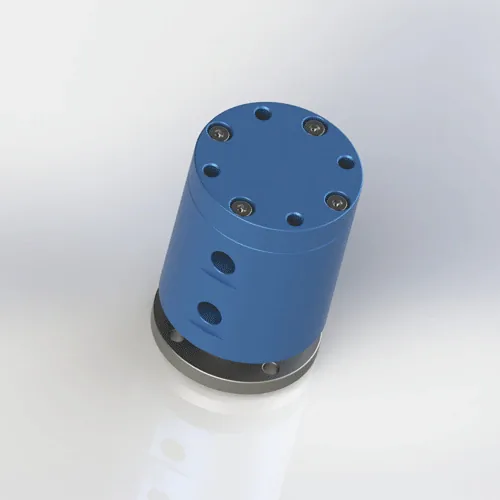

Оборудование для электроники и аккумуляторов часто объединяет поворотную оснастку, пневматические захваты, вакуумные присоски, датчики и испытательные станции. Пневматические ротационные соединения компактно подают воздух и вакуум к вращающимся узлам автоматизации.
Для кого предназначено решение: Для инженеров по автоматизации производства электроники, проектировщиков аккумуляторного оборудования и изготовителей испытательной оснастки для вращающихся станций контроля и перемещения.
При намотке аккумуляторных элементов, перемещении ячеек, испытании электроники и на вращающихся станциях контроля часто применяются пневмоцилиндры, вакуумные присоски и захваты, установленные на поворотной оснастке.
В таких машинах ротационное соединение должно быть компактным, чистым и стабильным в работе. Если дополнительно требуются электрические сигналы, следует рассматривать комбинированное пневмоэлектрическое решение, а не только воздушное соединение.

Типовое требованиеКомпактная подача воздуха и вакуума к вращающейся аккумуляторной оснастке, системам перемещения электроники, испытательным станциям и контрольному оборудованию.Уточните, требуется ли машине только передача пневматических сред или комбинированный пневмоэлектрический вращающийся интерфейс.
Для оборудования электронной и аккумуляторной промышленности могут потребоваться более чистые материалы, фильтрованный воздух и контролируемая смазка.
При ограниченном пространстве в оснастке чертёж следует проверить до выбора модели.
| Узел машины | Типовая функция | Критерий подбора | Рекомендация Begapunk |
|---|---|---|---|
| Оснастка для испытаний аккумуляторов | Подача воздуха на зажим и вакуумное удержание | Компактная схема каналов и стабильное давление | BP-2P или BP-3P |
| Вращающаяся станция контроля | Воздух для захвата и обдува | Низкая утечка и компактный корпус | BP-3P или специальное исполнение |
| Оснастка с пневматикой и сигналами | Пневматические среды и сигналы датчиков | Проверка комбинированного интерфейса | Специальное пневмоэлектрическое исполнение |
Отправьте компоновку машины, рабочие среды, давление, число каналов, частоту вращения, размер присоединения и доступное монтажное пространство. Begapunk проверит интерфейс и предложит подходящее стандартное или специальное ротационное соединение.
Да. Такое соединение подходит для пневматического зажима, вакуумного удержания, обдува и подачи среды к поворотной оснастке. Требования к чистоте и материалу необходимо согласовать заранее.
Begapunk может проработать комбинированное пневмоэлектрическое решение в специальном исполнении, если указаны ток, число сигналов и воздушных каналов, давление и частота вращения.